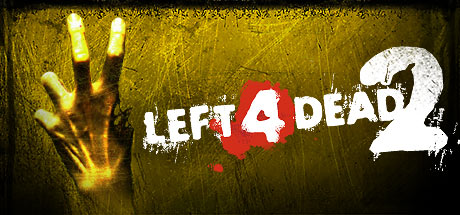

Left 4 Dead 2
Resumen
Half-Life, lanzado en 1998 por Valve, revolucionó el género de los shooters en primera persona al integrar narrativa y acción sin cortes cinemáticos. El jugador controla a Gordon Freeman, un científico del complejo Black Mesa que, tras un experimento fallido con el cristal de resonancia, abre un portal hacia otra dimensión.
La catástrofe provoca la invasión de criaturas alienígenas desde Xen y la intervención de fuerzas militares que buscan encubrir el incidente. Freeman debe abrirse paso entre enemigos humanos y alienígenas, mientras descubre la magnitud del desastre y la misteriosa figura del G‑Man.
Half-Life es considerado un clásico por su atmósfera, diseño de niveles y narrativa ambiental, sentando las bases para sus expansiones y secuelas.

Comprar en Steam- Duración: ~10 horas (campañas principales), +50 horas con rejugabilidad y mods
- Peso: ~13 GB en PC
- Fecha de lanzamiento: 17/11/2009
Trailer / Gameplay
Requisitos
- SO *: Windows 7/Vista/XP
- Procesador (mínimo): Pentium 4 3.0 GHz
- Procesador (recomendado): Intel Core 2 Duo 2.4 GHz
- Memoria: 2 GB RAM (mínimo) / 4 GB RAM (recomendado)
- Gráficos (mínimo): NVIDIA 6600 / ATI X800
- Gráficos (recomendado): NVIDIA 7600 / ATI X1600
- DirectX: Versión 9.0c
- Almacenamiento: 13 GB de espacio disponible
- Notas adicionales: Requiere conexión a Internet para juego cooperativo
Contenido adicional (DLC)
| Nombre | Fecha |
|---|---|
| The Passing | 22/04/2010 |
| The Sacrifice | 05/10/2010 |
| Cold Stream | 24/07/2012 |
| Left 4 Dead 1 Campaigns (remasterizadas) | Incluidas progresivamente entre 2010–2012 |
| Community Updates (The Last Stand) | 24/09/2020 |
Comentarios
- Ana: Me encantó este juego.
- David: Muy buena historia y jugabilidad.